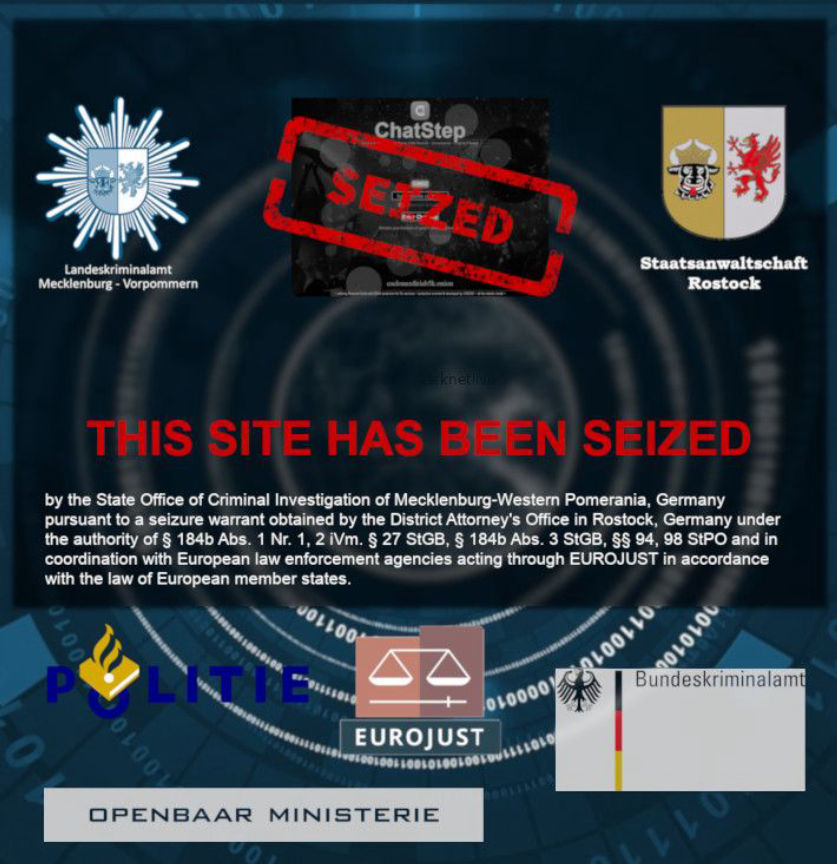
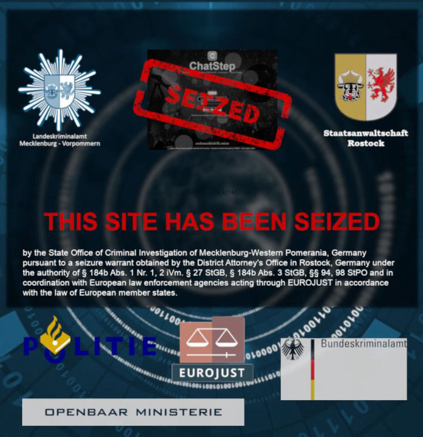

German Police Seize Another Darknet Child Abuse Site
German law enforcement, assisted by Eurojust and other law enforcement agencies, seized Chatstep clone, an uncensored chatroom filled with child abuse material. Many of the hidden service’s “anonymous” users were identified during the investigation, authorities revealed.
csclonezdiriab5k.onion
An anonymous tip through Netzverweis.de–German law enforcement’s site for whistle-blowers–alerted authorities to the hidden service in December 2017. The investigation required cooperation between international authorities and lasted “several months” at the very least. Investigations in the field of child pornography are usually very expensive and often require partnerships between different jurisdictions, prosecutors with the Rostock Prosecutor’s Office said in a press release.
chatstep seizure banner
[/img]
The “extremely close cooperation” with law enforcement in the Netherlands allowed German cybercrime investigators to locate and seize the server hosting the Chatstep clone (Chatstep). The Federal Criminal Police Office identified a service provider in Dubai that the Chatstep operator had used during creation of the site. The server hosting Chatstep (and more than 200,000 illegal pictures) was located in a data center in the Netherlands. Netherlands authorities assisted by imaging the server, seizing it, and passing it to their German colleagues.
“Despite the high level of encryption that such platforms provide on the Darknet, the investigation has helped to identify multiple users from different countries,” officials said. “One case involved a German national who also sexually abused his own child and also wanted to offer sexual abuse to others.”
Prosecutors in Rostock and the State Criminal Police Mecklenburg-Vorpommern thank Eurojust, the Federal Criminal Police Office and the partner authorities in the Netherlands for the very good cooperation.
The site operator and many of the site’s users are under investigation and facing charges in connection with the site.
csclonezdiriab5k.onion
An anonymous tip through Netzverweis.de–German law enforcement’s site for whistle-blowers–alerted authorities to the hidden service in December 2017. The investigation required cooperation between international authorities and lasted “several months” at the very least. Investigations in the field of child pornography are usually very expensive and often require partnerships between different jurisdictions, prosecutors with the Rostock Prosecutor’s Office said in a press release.
chatstep seizure banner
[/img]
The “extremely close cooperation” with law enforcement in the Netherlands allowed German cybercrime investigators to locate and seize the server hosting the Chatstep clone (Chatstep). The Federal Criminal Police Office identified a service provider in Dubai that the Chatstep operator had used during creation of the site. The server hosting Chatstep (and more than 200,000 illegal pictures) was located in a data center in the Netherlands. Netherlands authorities assisted by imaging the server, seizing it, and passing it to their German colleagues.
“Despite the high level of encryption that such platforms provide on the Darknet, the investigation has helped to identify multiple users from different countries,” officials said. “One case involved a German national who also sexually abused his own child and also wanted to offer sexual abuse to others.”
Prosecutors in Rostock and the State Criminal Police Mecklenburg-Vorpommern thank Eurojust, the Federal Criminal Police Office and the partner authorities in the Netherlands for the very good cooperation.
The site operator and many of the site’s users are under investigation and facing charges in connection with the site.